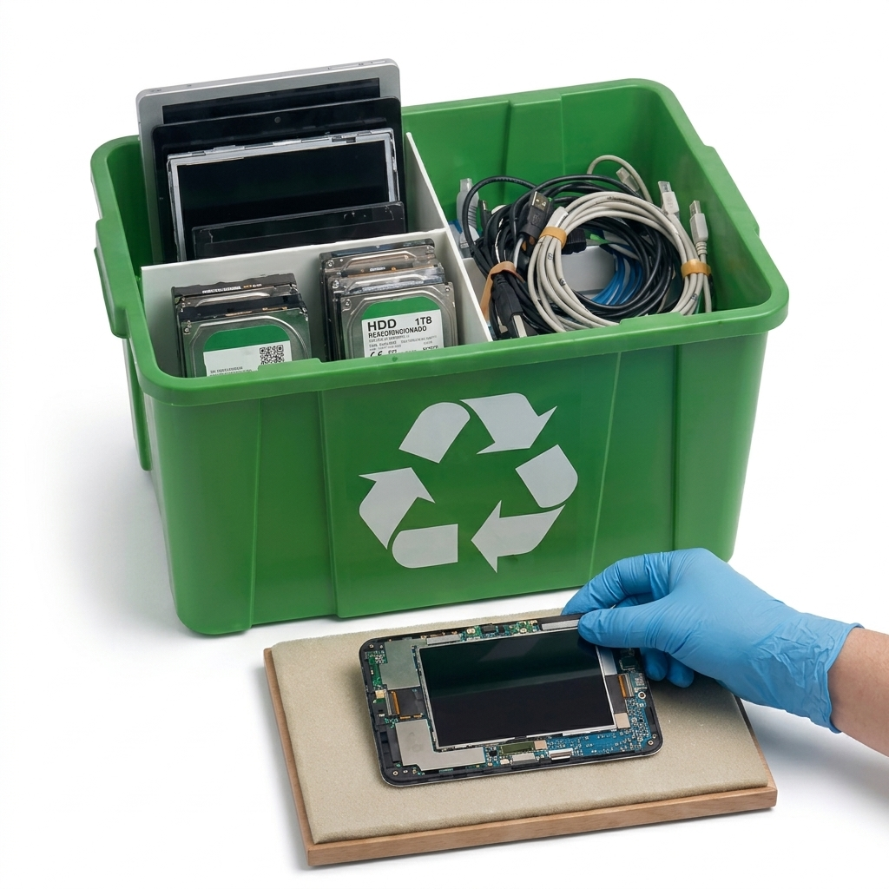

El Proceso de Teknex
Teknex facilita el flujo operativo entre Donantes y Beneficiarios. Ambas partes comparten sus datos básicos de identificación para garantizar un registro transparente.
El departamento de recepción gestiona tanto las donaciones monetarias como las físicas.